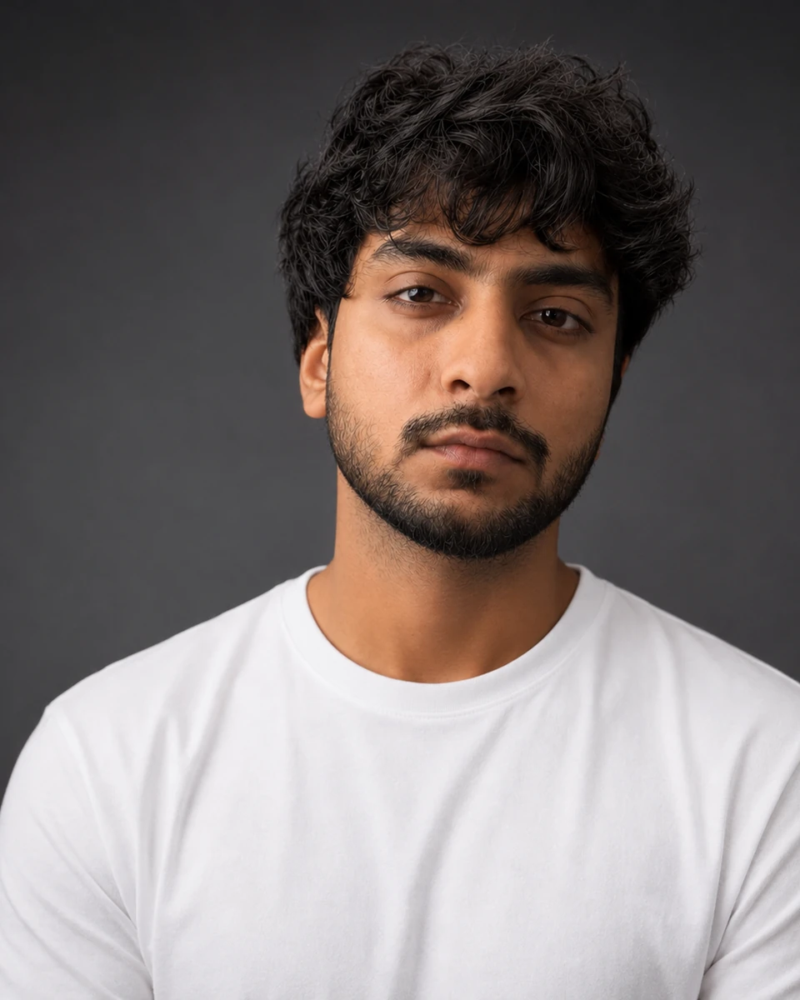
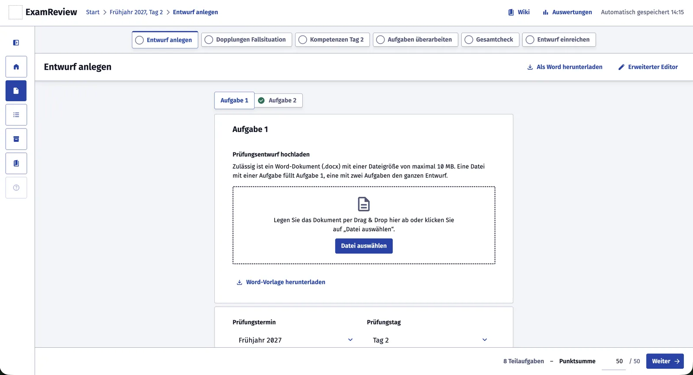
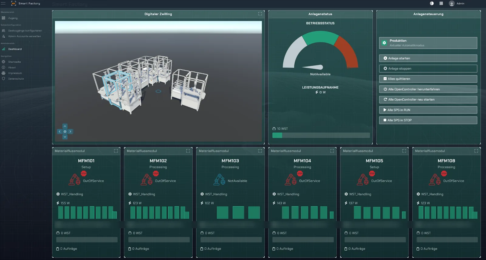
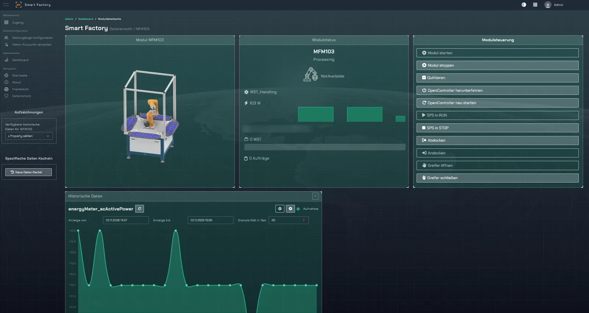

Marshal Sebastine
Ich baue KI-Prüfsysteme und Echtzeit-Backends, die im Betrieb laufen.
I build AI review systems and real-time backends that run in production.
Über vier Jahre Softwareentwicklung mit Python, Node.js und TypeScript: Geräteverwaltung für über 100.000 Geräte bei Hexnode, eine Low-Code-Rendering-Engine bei Ramco, Industrie-4.0-Datenpipelines an der OTH Amberg-Weiden und zuletzt ein KI-gestütztes Prüfwerkzeug für Pflegeprüfungen in der Digitalschmiede Bayern. Ich studiere M.Sc. Artificial Intelligence for Industrial Applications und suche eine Werkstudentenstelle in KI und agentischen Systemen.
Four-plus years of software engineering in Python, Node.js and TypeScript: device management for 100,000+ devices at Hexnode, a low-code rendering engine at Ramco, Industry 4.0 data pipelines at OTH Amberg-Weiden, and most recently an AI-assisted review tool for nursing exams at Digitalschmiede Bayern. I'm studying for an M.Sc. in Artificial Intelligence for Industrial Applications and looking for a working-student role in AI and agentic systems.

- StandortBased in
- Nürnberg
- VerfügbarAvailable
- ab sofort · 16–20 Std./Wochenow · 16–20 h/week
- StudiumStudies
- M.Sc. AI, OTH Amberg-Weiden
- SprachenLanguages
- Deutsch B2 · Englisch C1German B2 · English C1
ExamReview
Lehrkräfte schreiben die Entwürfe für die schriftlichen Abschlussprüfungen der Pflegeausbildung. ExamReview prüft jeden Entwurf gegen die Regeln aus Gesetzen und Handreichungen, zeigt jeden Befund mit Quelle und schlägt eine Korrektur vor. Die Entscheidung bleibt bei der Lehrkraft.
Teachers write the drafts for the written final exams in nursing education. ExamReview checks each draft against the rules from laws and official guidance, shows every finding with its source and suggests a fix. The teacher keeps the final say.
So läuft ein Entwurf durch die PrüfungHow a draft moves through the review

Wie die Prüfung funktioniertHow the check works
Die Qualität der LLM-Befunde wird mit einem zweiten Modell als Bewerter (LLM-as-judge) gemessen. Im Test an 12 echten Vorjahresentwürfen erreichte das System im Schnitt 85 % Präzision und 82 % Recall.
A second model acting as judge (LLM-as-judge) measures the quality of the LLM findings. Tested on 12 real exam drafts from past years, the system averaged 85% precision and 82% recall.
Im Fellowship-Team habe ich die KI-Prüflogik gebaut: den Regelkatalog aus den Rechtstexten, die Einteilung in deterministische, LLM- und hybride Regeln, die strukturierten LLM-Befunde und die LLM-as-judge-Evaluation. Gearbeitet habe ich spec-driven mit Claude Code. Als Nächstes erweitere ich das System zu einer Agenten-Architektur.
In the fellowship team I built the AI review logic: the rule catalogue derived from the legal texts, the split into deterministic, LLM and hybrid rules, the structured LLM findings and the LLM-as-judge evaluation. I worked spec-driven with Claude Code. Next, I'm extending the system into an agent-based architecture.
Imitation Learning am Niryo Ned2Imitation learning on the Niryo Ned2
Im KI-Projektmodul meines Masters bringe ich mit einem Projektpartner einem Niryo-Ned2-Roboterarm eine Aufgabe durch Vorführen bei: Er soll eine Münze entlang einer schwarzen Linie schieben. Statt die Bewegung von Hand zu programmieren, lernt der Arm sie aus Demonstrationen.
In the AI project module of my Master's, a project partner and I are teaching a Niryo Ned2 robot arm a task by showing it: push a coin along a black line. Instead of programming the motion by hand, the arm learns it from demonstrations.
Der AnsatzThe approach
Das Projekt läuft noch. Videos vom echten Arm und Ergebnisse folgen hier, sobald sie vorliegen.
The project is ongoing. Videos of the real arm and results will be added here as soon as they are available.
Smart Factory
Eine Lernfabrik aus Materialflussmodulen mit Roboterarmen, SPS und Energiezählern. Jedes Modul liefert seine Daten über einen eigenen OPC-UA-Server. Der Leitstand zeigt die Anlage live, als digitalen Zwilling und mit historischen Messwerten, und steuert sie.
A learning factory built from material-flow modules with robot arms, PLCs and energy meters. Each module serves its data through its own OPC UA server. The control dashboard shows the plant live, as a digital twin and with historical readings, and controls it.

DatenflussData flow

Ich entwickle die ereignisgesteuerten Backend-Dienste, die die Module über OPC UA, REST und WebSockets an die Plattform anbinden. Durch asynchrones Design sank die Datenlatenz um 40 %. Die Dienste laufen in Docker und werden über GitLab CI/CD ausgeliefert. Leitstand-Oberfläche und digitaler Zwilling entstehen im Team; mein Teil ist die Datenschicht dahinter.
I build the event-driven backend services that connect the modules to the platform over OPC UA, REST and WebSockets. Async design cut data latency by 40%. The services run in Docker and ship through GitLab CI/CD. The dashboard UI and the digital twin are team work; my part is the data layer behind them.
Das Hexnode-Ökosystem auf dem MacThe Hexnode ecosystem on the Mac
Hexnode UEM verwaltet Firmengeräte. Auf jedem verwalteten Mac arbeiten mehrere Programme zusammen, die ich in Teams von zwei bis drei Entwicklern mitgebaut habe. Wählen Sie einen Ablauf und sehen Sie, wie die Teile zusammenspielen.
Hexnode UEM manages company devices. On every managed Mac, several programs work together, which I co-developed in teams of two to three engineers. Pick a scenario and watch how the parts interact.
Die Apps laufen auf den Geräten der Unternehmen, die Hexnode UEM einsetzen. Die Plattform verbindet über 100.000 Geräte.
The apps run on the devices of companies using Hexnode UEM. The platform connects 100,000+ devices.
Die Laufzeit einer Low-Code-PlattformThe runtime of a low-code platform
In Ramcos Low-Code-Plattform bauen Anwender Oberflächen per Drag & Drop. Der Designer speichert jede Seite als JSON: Layout, Komponenten und was jeder Button tut. Ich habe an der Runtime gearbeitet, die aus diesem JSON im Browser eine lauffähige Anwendung macht.
In Ramco's low-code platform, users build interfaces by drag and drop. The designer stores each page as JSON: the layout, the components and what every button does. I worked on the runtime that turns this JSON into a working application in the browser.
Ausprobieren: JSON rein, Oberfläche rausTry it: JSON in, interface out
Ich habe an der Rendering-Runtime mitgearbeitet, also dem Teil, der die Metadaten interpretiert, Komponenten aufbaut und Button-Aktionen ausführt. Daneben habe ich Engpässe in Diensten und UI-Komponenten der Plattform behoben und die CI/CD-Pipelines für Paketauslieferung und Releases automatisiert.
I worked on the rendering runtime, the part that interprets the metadata, builds the components and runs the button actions. Alongside that I fixed bottlenecks in the platform's services and UI components and automated the CI/CD pipelines for package delivery and releases.
- 08–10/2026Software Engineer Fellow · Digitalschmiede Bayern, byteMünchen · KI-Prüfwerkzeug ExamReview, spec-driven developmentMunich · AI review tool ExamReview, spec-driven development
- seitsince 06/2025Studentische Hilfskraft – SoftwareentwicklerStudent developer · OTH Amberg-WeidenAmberg · Echtzeit-Backends für die Smart FactoryAmberg · Real-time backends for the Smart Factory
- 06/2024–01/2025Software Engineer II · Ramco SystemsChennai · Low-Code-Runtime, Performance, CI/CDChennai · Low-code runtime, performance, CI/CD
- 08/2021–06/2024Software Engineer · Mitsogo (Hexnode)Chennai · macOS-Geräteverwaltung, Fernsteuerung, verteilte BackendsChennai · macOS device management, remote control, distributed backends
AusbildungEducation
- seitsince 03/2025M.Sc. Artificial Intelligence for Industrial ApplicationsOTH Amberg-Weiden
- 2017–2021B.Tech MaschinenbauMechanical EngineeringAPJ Abdul Kalam Technological University, Kerala
KI & LLMsAI & LLMs
Backend & Echtzeitreal-time
Betrieb & ArbeitsweiseDelivery & workflow
Lassen Sie uns sprechen.Let's talk.
Ich bin ab sofort für eine Werkstudentenstelle mit 16–20 Stunden pro Woche verfügbar.
I'm available now for a working-student role at 16–20 hours per week.